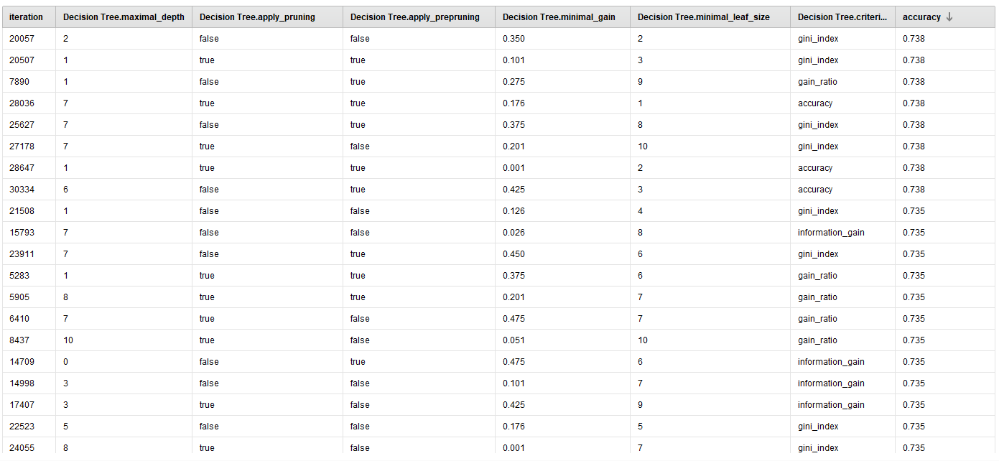
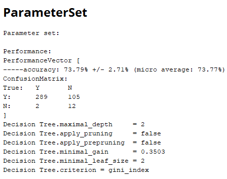
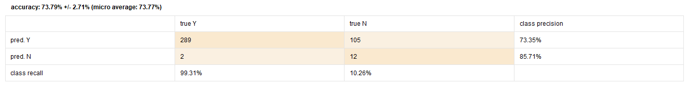

Predicción pacientes de India
Datos utilizados data set pacientes
El presente data set consta de información de pacientes del noreste de Andhra Pradesh, India :
En primer lugar según CRISP - DM se procede a la comprensión del área de estudio, la misma refiere a mediciones de diferentes variables de pacientes para determinar si tienen hígado o no.
En segundo lugar se procede a la comprensión de los datos, observamos los atributos medidos y su significado:
es_paciente es la variable de predicción asume dos valores que representan si el paciente tiene hígado o negocio.
Atributo |
Tipo de atributo |
Rango |
Distribución |
|---|---|---|---|
| age - Edad: Edad del paciente. Se categoriza como 90 cualquier persona mayor a 90. | Numérico | 4-90 | Normal | gender - Genero: Asume los valores femenino y masculino |
Binominal | Femenino-Masculino | - | tot_bilirrubin - Bilirrubina total:Valores de bilirrubina total del paciente (combinación de directa e indirecta). |
Continua | 0,4-75 | Exponencial | direct_bilirrubin - Bilirrubina directa:Valores de bilirrubina directa del paciente. |
Continua | 0,10-19,7 | No tiene una forma de distribución conocida | tot_proteins - Proteínas totales: Cantidad de proteínas en sangre. |
Continua | 63-2210 | Exponencial | albumin - Albuminas: Total de albuminas en sangre. |
Continua | 10-2000 | Exponencial | ag_ratio - Ratio de albuminas y globulinas: Indica el ratio entre albuminas y globulinas. |
Continua | 10-4929 | Exponencial | sgpt - Alanina aminotransferasa Valores de la enzima alanina aminotransferasa medidos en sangre. |
Continua | 2,7-9,6 | Sesgada a la izquierda | sgot - Aspartato aminotransferasa: Valores de la enzima medidos en sangre. |
Continua | 0,9-5,5 | Pareciera una forma normal con un leve sesgo a la izquierda. | alkphos - Fosfatasa alcalina: Valores de la enzima medidos en sangre. |
Continua | 0,3-2,8 | Sesgada a la derecha. |
Analizados los atributos, los rangos y distribuciones de los mismos de acuerdo a la información brindada por rapid miner en sus resumen de resultados:

Como se observa en esta imagen los 0 en la columna (missing) indican que sólo el atributo alkphos (Fosfatasa alcalina) tiene 4 datos faltantes. Depende del modelo a utilizar la repercusión que pueden tener los datos faltantes en el mismo.
Los rangos no denotan valores anormales (outliers).
Por otra parte este problema consta con datos etiquetados, por lo que utilizaremos un modelo supervisado de aprendizaje y la variable dependiente a explicar es categórica por tanto estamos ante un problema de clasificación.
Se decide utilizar dadas las características del pproblema un árbol de decisión para que sea fácilmente visualizable la solución y de baja complejidad.
Para tal fin se vuelve discreta (binominal) la variable de salida y se vuelve discreta la variable genero tomando valores 1 (Hombre) 2(Mujer).
Por otra parte se utilizará un proceso de optimización para averiguar qué parámetros del arbol de decisión resultan en un mejor nivel de precisión del modelo.
En la siguiente imagen es posible observar que se miden las diferentes precisiones del modelo de acuerdo a diferentes ajustes en los parámetros

Los mejores resultan ser los primeros 8 modelos, con una precisión del 73,4%, utilizando Gain Ratio, Gini Index y Accuracy como parámetros de ajuste del modelo,
Como muestra la siguiente imagen se obtiene como mejor resultado el modelo que utiliza Gini Index con una profundidad máxima de 2 y un valor mínimo en cada hoja también de dos,
obteniendo un 73.79% de precisión en la matriz de confusión

Se pueden analizar estos valores considerando la performance obtenida del modelo, como se muestra en la siguiente imagen
Aquí se observa que 289 casos cuya predicción fue Sí, efectivamente son pacientes con hígado mientras 105 cuya predicción fue no, también es una predicción acertada ese decir, no tiene hígado.